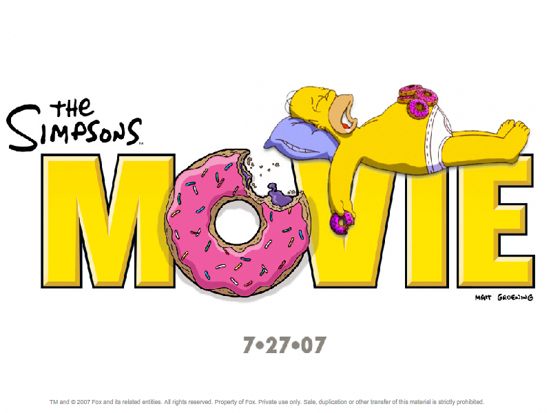

Simpsons Screensavers
The Simpsons
DOWNLOAD
.exe file zipped (Windows) (529 KB)
.sit file (Mac OS X) (529 KB)
The Simpsons Movie

DOWNLOAD
.exe file zipped (5.64 MB)


 .exe file zipped (Windows) (529 KB).sit file (Mac OS X) (529 KB).exe file zipped (5.64 MB)
.exe file zipped (Windows) (529 KB).sit file (Mac OS X) (529 KB).exe file zipped (5.64 MB)